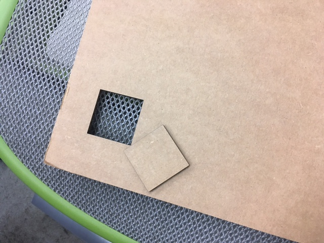

<br>
#### Week 2: 2D Design and Cutting
This week we learned how to make a press-fit kit and how to use Fusion360.
I followed the tutorial from Nathan's website on how to make a basic 2D sketch and use it as a template to create a 3D object.
Then, we learned how to export our sketches to the laser cutter for cutting. I was so proud when I cut my first square with the laser cutter, although the smell of burnt cardboard was strong!

I then used my press-fit kit file from Fusion360 in the laser cutter, and cut several pieces! The most challenging part was figuring out the right measurement to use as my kerf. It was difficult to get a consistent measurement with the calipers, because the space was so tiny.
After my first attempt with the laser cutter, the holes where the pieces were meant to fit together were to small, and the pieces couldn't slide in comfortably. I made the kerf larger and my second attempt was successful!
Additionally, we learned how to use 2D vector drawings with other cutters -- namely, the vinyl cutter. I made a sticker for my boyfriend with the name of his street on it.